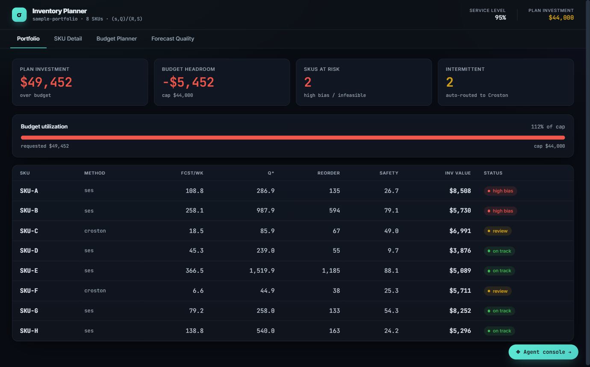

Case Study — Network Design
Multi-Echelon Network Optimization
Where in a multi-stage supply chain should safety stock actually live? The Guaranteed-Service Model answers that with numbers, not intuition.

Problem
Positioning safety stock node by node in a multi-stage supply chain (supplier → distribution center → store) is a common but wasteful default. Holding a buffer at every stage double- and triple-covers the same variability. The real question is where in the chain to hold it.
Method
The Guaranteed-Service Model (GSM) — Vandeput (2020) Ch. 10, building on Graves & Willems — computes each stage's optimal "net replenishment time" (its risk period) to minimize total holding cost across the chain while still meeting a target end-to-end service level.
What I built
I ran Kern's multi_echelon module on a 3-stage serial chain with stage lead times of 4, 3, and 2 days, demand of μ=100 / σ=25 per period, review periods of 1, 2, and 4 days at each stage, and a 95% target service level.
Result
Worked example reproduced from Kern's engine (src/multi_echelon.py) — reproducible via Exercise 6 in the repository's case-studies file.
How this compares
The common default — holding safety stock only at the node closest to the customer, with no risk-pooling across the chain — already has a real, measurable cost in this exact scenario.
Grounded in this repository's own test suite (test_gsm_case4_all_downstream_cost), not a hypothetical — see CASE_STUDIES.md, Exercise 9.